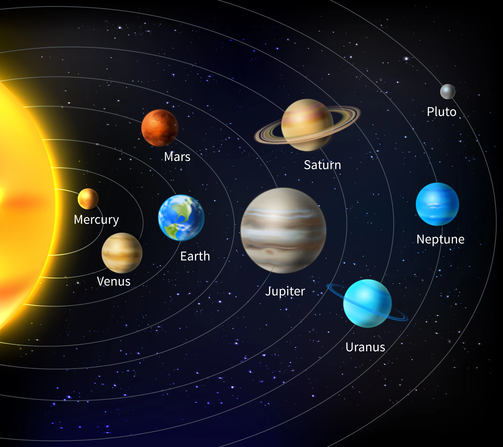
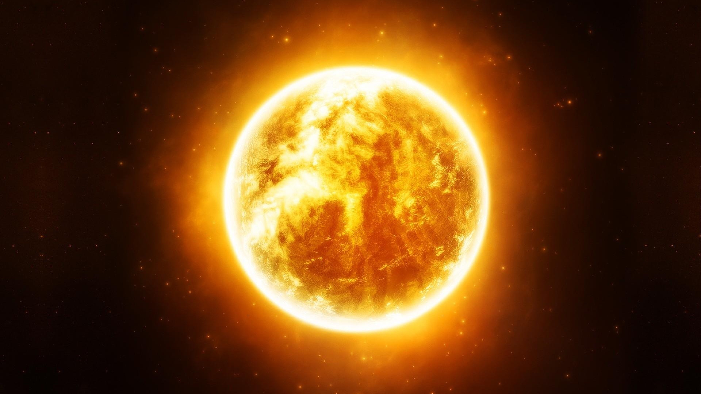
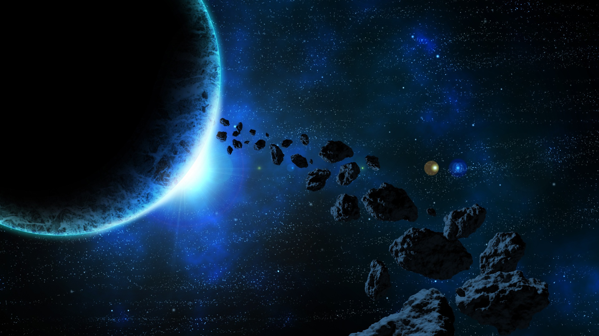

The Solar System is the gravitationally bound system of the Sun and the objects that orbit it. The vast
majority
(99.86%) of the system's mass is in the Sun (a dwarf yellow star at the center). The four inner system
planets—
Mercury, Venus, Earth and Mars are composed primarily of rock and metal. The two largest, Jupiter and
Saturn, are
gas giants, being composed mainly of hydrogen and helium; the next two, Uranus and Neptune, are ice giants,
being
composed mostly of substances such as water, ammonia, and methane.
Planets :

The Solar System has at least eight planets: the terrestrial planets Mercury, Venus, Earth and Mars, and the
giant planets Jupiter, Saturn, Uranus and Neptune.
The word planet probably comes from the Greek planḗtai, meaning "wanderers". Ceres and other bodies later
recognized to be part of the asteroid belt; and Pluto,
later found to be the largest member of the collection of icy bodies known as the Kuiper belt. The
International Astronomical Union (IAU) adopted a standard by
which the four terrestrials and four giants qualify, placing Ceres, Pluto and Eris in the category of dwarf
planet. Further advances in astronomy led to the
discovery of over five thousand planets outside the Solar System, termed exoplanets. These include hot
Jupiters—giant planets that orbit close to their parent
stars—like 51 Pegasi b, super-Earths like Gliese 581c that have masses in between that of Earth and Neptune;
and planets smaller than Earth, like Kepler-20e.
The Sun :

The Sun is a star located at the center of our solar system. It is by far the largest object in the solar
system, accounting for more than 99% of the total mass of the solar system. The Sun's core is currently
undergoing nuclear fusion, which releases a tremendous amount of energy in the form of light and heat. The
Sun has a significant impact on the Earth and the rest of the solar system. Its gravity is responsible for
keeping the planets in their orbits, and its energy is the source of all life on Earth. For more information
on Sun, click the below button :
Other :

Our Solar system is very vast and does not contain just the above mentioned celestial bodies. In fact, it
does have more such as big chunks of rocks called asteriods, Comets (made up of ice and dust) and many more.
There are two places where most of the asteriods have gathered together. These two places are the Asteroid
Belt (between Jupiter and Mars) and Kupiter Belt (After neptune and at the edge of the solar system). Out of
both of them, Asteriod Belt has more densly packed asteroids whereas Kupiter Belt also has a lot of
asteroids but they are more spread out from each othr due to the greater area available.